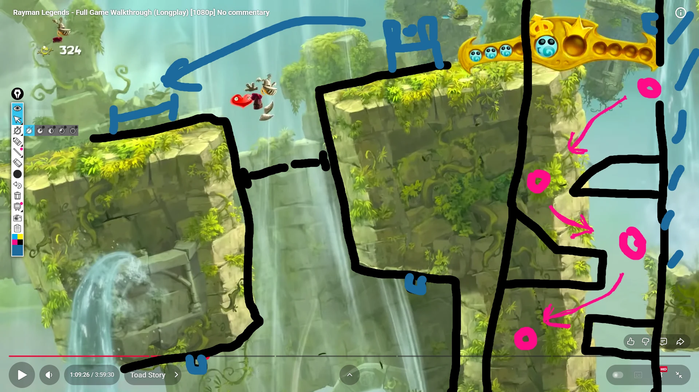
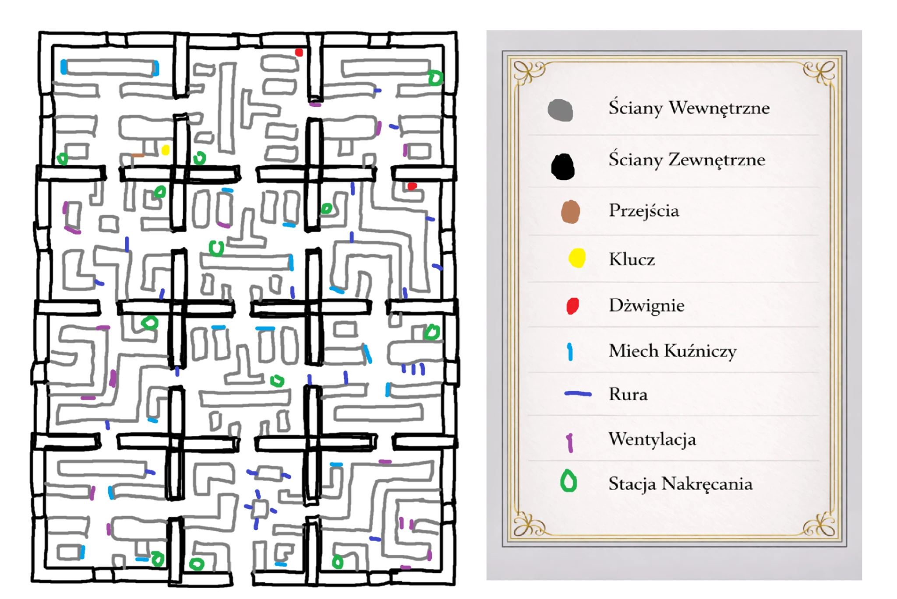
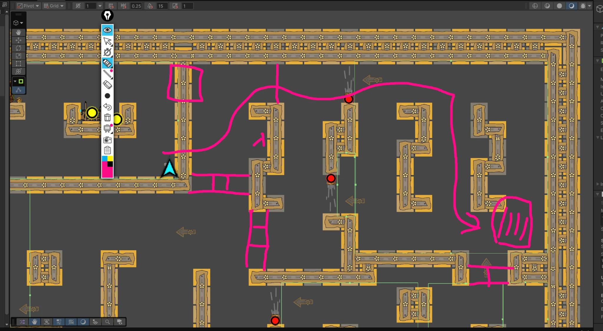
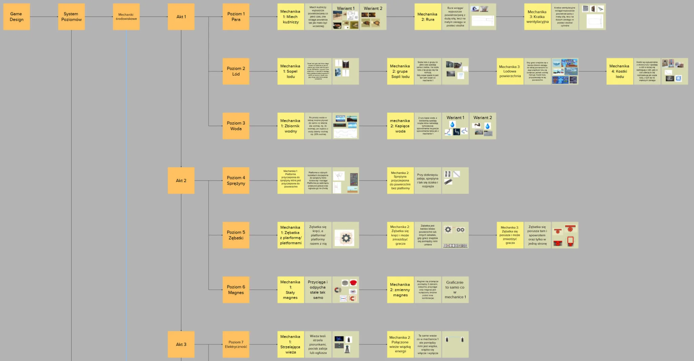

Jak sprawić, żeby zegar był mechaniką?
Sam setting nie generował decyzji. Potrzebny był zasób, który wpływa na ruch, trasowanie i tempo eksploracji.
CASE STUDY · 2025 / 26 · YEAR TWO
Projekt rozwijany jako Cuckoo Clock, finalnie nazwany Cuckoo Keeper. 2D platformowa gra przygodowo-zręcznościowa osadzona wewnątrz ogromnego steampunkowego zegara.
DESIGN PREMISE
Core loop opiera się na eksplorowaniu wnętrza zegara, planowaniu trasy, zarządzaniu energią, aktywowaniu checkpointów, zbieraniu przedmiotów i naprawianiu mechanizmów. Presja czasu wynika z ograniczonego naciągu postaci i kosztów ruchu.
Moja praca obejmowała projektowanie i iterację gameplayu, movementu, energii, pułapek, przedmiotów, inventory, mechanizmów poziomu oraz czytelności i stabilności prototypu.
Sam setting nie generował decyzji. Potrzebny był zasób, który wpływa na ruch, trasowanie i tempo eksploracji.
Ruch i dash zużywają zasób, postoje mogą go oszczędzać, a przedmioty i mechanizmy modyfikują sposób poruszania się.
Gracz nie tylko omija przeszkody. Musi planować drogę, zarządzać zasobami i wykorzystywać elementy świata do dalszego przejścia.
RESOURCE NETWORK
Eksploracja ma koszt, więc trasa i timing są częścią decyzji.
Daje kontrolę w zagrożeniu, ale konkuruje o ten sam zasób.
Mechanika daje przestrzeń na obserwację pułapek i planowanie.
Waga, kryształ, olej i kaseta naciągu zmieniają ekonomię przejścia.
Świat staje się częścią progresji zamiast statycznym tłem.
MY CONTRIBUTION · FINAL PRESENTATION
Movement, feeling sterowania, dash, system energii oraz zachowanie pułapek.
Znajdźki, inventory, używanie przedmiotów, wymiana części, zębatka, kryształ, olej i kaseta naciągu.
Teleporty/przejścia, checkpointy, bramy, zepsute warianty mechanizmów oraz naprawianie obiektów.
Tutorial, prowadzenie gracza, tilesety, uproszczona minimapa, testowanie i bugfixing interakcji.
PLAYTEST EVIDENCE
Raport testów wskazuje, że po poznaniu mapy czasy spadały do ok. 2–4 minut, a iteracja po testach objęła zarówno level design, jak i nowe systemy.
LEVEL DESIGN PROCESS



MECHANICS PLANNING

PROJECT IDENTITY
Brandbook definiował pełną nazwę Cuckoo Keeper, zasady logotypu, typografię oraz paletę. To materiał zespołowy — w portfolio służy jako kontekst produktu, nie jako przypisanie całego brandingu do mojej roli.
REFERENCE ATTRIBUTION
Pierwszy obraz w sekwencji level designu jest analizą zewnętrznej referencji Rayman Legends. Nie jest przedstawiany jako własna grafika ani własny level — służy wyłącznie jako zapis analizy referencyjnej.
SOURCE MATERIAL